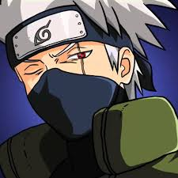

- Jaiotze-data :
- 1989ko Irailak 15ean
- Sexua:
- Gizonezkoa
- Adina:
- 31urte
- Altuera:
- 1,81m
- Pisua:
- 67,5kg
- Herria:
- Konoha
- Herrialdea:
- Susko herrialdea
- Posizioa:
- 6.Hokagea izan zen
- Habilitatea:
- Raikiri
- Gauza interesgarriak:
- Obito Uchihak eman zion Sharingana, Narutoren munduan Kakashi ospetsu egin zuen gauzetako bat da. Besteen mugimenduak eta jutsusak imitatzeko gaitasuna emanez, Sharingani esker, Kakashik abantaila handia du batailetan.
- Historia:
- Bere gaztaroan, Kakashiren aita, Konoha herrixka ezkutuagatik oso gurtua izan zen ninja bat izan zen, baina honek, herriarentzat berebiziko misio bat utzi zuen bere taldekideen bizitzak salbatzeko, eta, ondorioz, baserritarrek, baita euren lagunek ere, desohoratu egin zuten, eta, horregatik, bere buruaz beste egitea erabaki zuen.
Bere aitaren desohore bera saihestu nahian, Kakashik, misio baten arrakasta, kosta ahala kosta ziurtatu behar denaren filosofia hartu zuen.
Baina Obito Uchiha — bere beste kideak — alternatiba horri uko egin zion eta "misio bat uzten dutenak zepa direla, baina bere kideak uzten dituztenak zepa baino okerrago" adierazi zuen. Hala ere, honek Rini Kakashiri bere Sharingana ezartzeko esaten dio, Jōnin bezala igo izanagatik opari bezala.
Ondoren, Kakashik, istripuz, Rhin hiltzen du , hau, Lainoaren Alde Ezkutuko shinobis batzuek harrapatu eta hiru ilarako piztiaren juntxuriki bihurtua izan zelako, Isobu, Konohara sartzen zenean isatsdun piztia askatu eta herrixka suntsituko zutena, Rin, honetaz kontziente. Honela, ninja gazteak, Mangekyō Sharingan esnatzen du, Obitok bezala, nork, medikoki, Madara Uchihak tratatu zuen, eta gudu zelaira joaten zen laguntzeko. Hala ere, Kakashi, Uchiha ez bat zenez, Mangekyō Sharingan bere ezker begiko eraldaketak, berehala konorterik gabe utzi zuen chakra ihes masibo bat eragin zion, baina, bere lagunaren heriotza ikustean, Obitok, Madararekin aliatzea eta bere planak gauzatzea erabakitzen du.